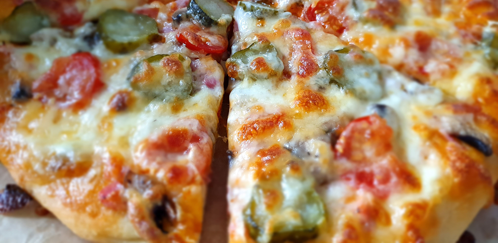

приготовление:
-
Тесто на 2 основы для пиццы.
-
В миску положить 1 пакетик быстроподнимающихся сухих дрожжей, 1 ст.л. сахара, 330 мл. теплой воды (примерно 40 градусов, но не больше 50) помешать, накрыть полотенцем, оставить на 5 минут. Духовку разогреть до 40 градусов. Туда же отправить 2 ст.л. оливкового масла, хорошую щепотку соли и 450-500 гр. муки. Замесить тесто. Не добавлять лишней муки, чтобы тесто не стало жестким. Форму для расстойки смазать оливковым маслом, тесто тоже, положить тесфо в форму, накрыть полотенцем, отправить в приоткрытую духовку на 60-90 минут, пока она не увеличится в 2 раза.
-
В это время можно приготовить начинку для пиццы. Это может быть 1: соус для пиццы, ветчина, свежий ананас (помакнуть полотенцем бумажным), моцарелла твердая или 2: соус из кетчупа и майонеза пополам, обжаренные шампиньоны с солью и перцем, ветчина, маринованные огурцы, черри, твердая и мягкая моцарелла.
-
Разогреть духовку до 245 градусов. Достать из формы тесто, присыпав мукой. Разделить на 2 части. Пока одну можно убрать в холодильник. Другую раскатать или растянуть руками до нужной круглой формы, слегка сформировав борты. Можно формировать сразу на бумаге для выпечки. Или можно присыпать противень манкой и уже выложить туда тесто, слегка поправив форму. Накрыть полотенцем или пленкой на 5 минут. Очень важно! — смазать тесто оливковым маслом, это будет преградой для жидкостей с начинки. Потом соус и другие ингридиенты.
-
Выпекать 12-15 минут, но лучше приглядывать за пиццой после 10 минут, чтобы не сгорела случайно.